Creating New Shipments
This page explains how to use the Sorted Portal to create shipments manually.
[!include[_development_statement](../pro/api/includes/_development_statement.md)]Introduction
The Sorted delivery management platform is designed as an "API-first" system. Ordinarily, shipments are managed via an integration with customer’s warehouse / client management systems, utilising the Sorted APIs to perform actions such as shipment creation, allocation, manifesting, and reporting.
Note
For information on creating shipments using the Create Shipments API, see the Creating Shipments page of the API User Guide.
However, there are certain cases where manual intervention is required, either as a workaround or as a convenient way to manage one-off shipment exceptions. For example, an order may need to be fulfilled urgently. By using the Portal to manage the shipment manually you can expedite the order by bypassing the conventional shipment creation/allocation/manifest process.
The Create Shipments page enables you to create shipments manually. To access Create Shipments, select PRO > Create Shipment from the Dashboard.
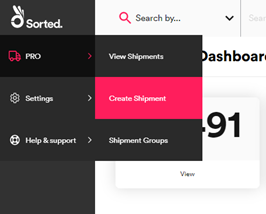
The Create Shipments Process
The Create Shipment process has eight steps, five of which are optional:
- Select tenant
- Enter shipment details
- Enter package details
- Enter origin
- Enter destination
- Enter shipping dates (Optional)
- Provide customs documentation (Optional)
- Provide dangerous goods information (Optional)
Note
Mandatory data fields are marked with an asterisk and display a red border if any required data fields are left blank.
Step 1 – Select Tenant
If you have multi-tenancy enabled, the first step in the process is to use the Tenant/Channel Selection card to select the Tenant and Channel that the shipment belongs to. This step is not displayed for single-tenant customers, or for multi-tenanted users that are only assigned to a single tenant. In this case the relevant tenant is automatically selected in the background.
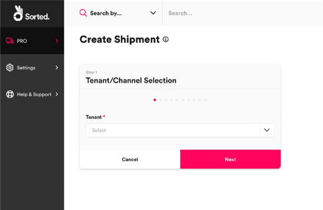
Select an option from the Tenant drop-down menu and then click Next to display the Shipment Details card.
Note
Selecting an incorrect tenant may limit the shipping locations and carrier services that you can select for the shipment, and may also affect the rates applied.
For more information on configuring multi-tenancy, see the Managing Tenants and Channels page.
Step 2 – Enter Shipment Details
The Shipment Details card enables you to select the shipment's type and direction, as well as specifying the measurement unit system and currency that the shipment should use. This step is mandatory for all shipments.
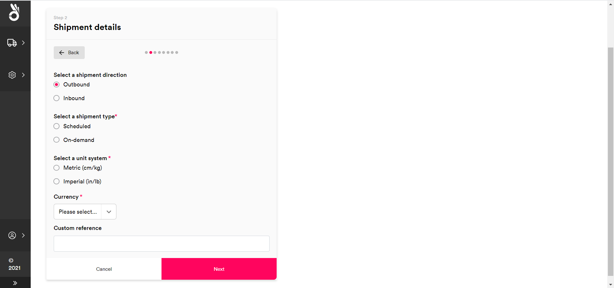
To configure shipment details:
Use the radio buttons to Select a shipment direction. There are two available options:
- Outbound – The shipment is taking goods from the retailer/3PL to the end customer.
- Inbound – The shipment is returning goods from the end customer to the retailer/3PL.
Use the radio buttons to Select a shipment type. There are two available options:
- Scheduled – The shipment is intended to be allocated to a scheduled service (that is, a service whereby the pickup location has a regularly planned collection).
- On-Demand – The shipment's start location does not have a regular, scheduled collection. As such, the shipment is intended to be allocated to an ad-hoc service and will require the Portal to book a bespoke collection.
Use the radio buttons to Select a unit system. You can select either Metric (cm / kg) or Imperial (in / lb). The Portal uses the selected unit system throughout the rest of the shipment creation process.
Select a Currency from the drop-down list. The Portal uses the selected currency throughout the rest of the shipment creation process.
Optionally, enter a Custom Reference. The reference entered into this field populates the shipment's
custom_referencefield once the shipment is created.Click Next to display the Package Details card.
Step 3 – Enter Package Details
The Package Details card enables you to specify details of the shipment's packages. This step is mandatory for all shipments.
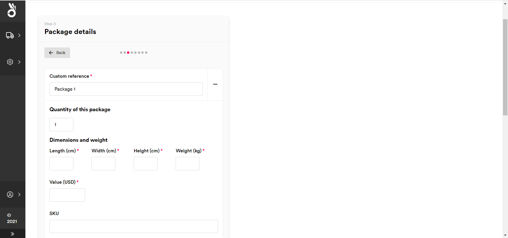
Note
A package is an item or a collection of items contained together for a shipment. A shipment can contain multiple packages.
To configure package details:
Enter a Custom Reference for the package.
Optionally, enter the Quantity of This Package. If you enter a value greater than one then the Portal adds multiple identical packages to the shipment at the point of creation.
Enter the Dimensions and Weight of the package. You can specify Length, Width, Height, and Weight. These values should be given in the unit system selected in the previous step.
Enter the Package Value. This value should be given in the Currency selected in the previous step.
Optionally, enter the package's SKU. This is the Stock Keeping Unit reference of the item / package.
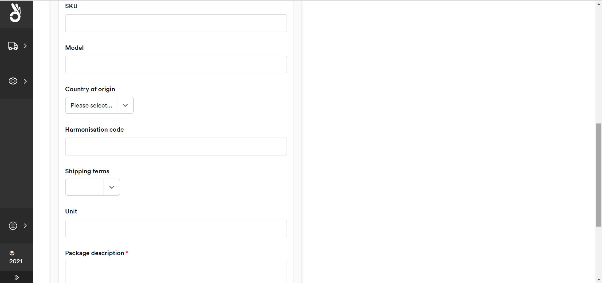
Optionally, enter a Model reference for the package.
Optionally, enter the package's Country of Origin
Optionally, enter the package's Harmonisation Code. If provided, must be a valid harmonisation code.
Note
For more information on harmonisation codes, see the UN Trade Statistics site.
Optionally, select the package's Shipping Terms
Optionally, specify a Unit of packing (e.g. "box")
Enter a Package Description of up to 100 characters.
Optionally, click Add Item to add details of a specific item within the package. The Portal displays additional properties relating to item details.
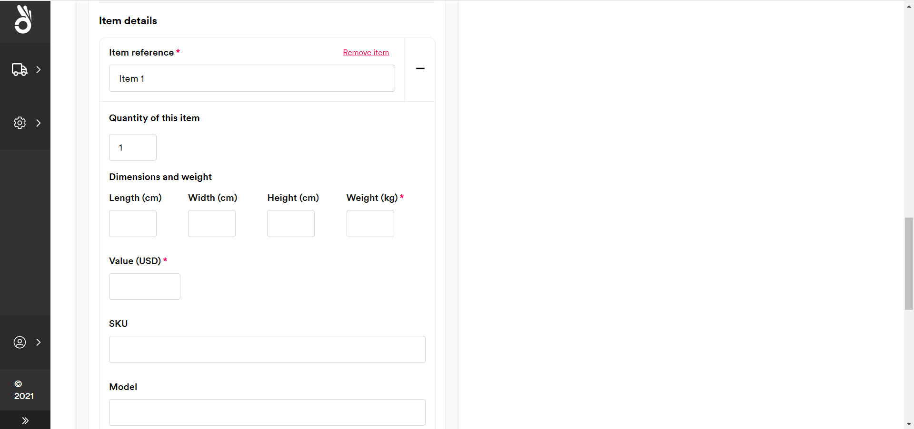
The system uses the same properties to record item details that it does to record package details. Repeat steps 2-12 to record the details of your item. The only mandatory fields for items are Value and Description.
Optionally, click Add Another Package to record details of another package. The system displays a new set of properties relating to the new package's details. Repeat steps 2-13 to record the new package's information.
To delete an item or package, select the - icon next to the item or package Reference. The shipment must contain details of at least one package.
Note
As an example, suppose that a clothing retailer has received a customer order for a necklace, a bracelet, and a coat. As the necklace and bracelet are both physically small, the retailer elects to ship them in the same package. The resulting shipment would contain:
- One package containing details of the coat and its accompanying package.
- One package containing details of the package that the necklace and bracelet are shipping in.
- One item containing details of the necklace, nested inside the relevant package.
- One item containing details of the bracelet, nested inside the relevant package.
When the system creates the shipment, it records the package and item details specified in a series of nested contents properties. See the Specifying Shipment Contents section of the PRO v2 API User Guide for an overview of how the PRO Create Shipment API handles shipment contents.
When you have configured shipment contents, click Next to display the Origin Details card.
Step 4 – Enter Origin
The Origin Details card enables you to specify an origin address and contact details for the shipment. This step is mandatory for all shipments.
If your organisation (or the selected tenant and channel for multi-tenancy organisations) has shipping locations configured, then the Portal prompts you to select a location as your origin destination.
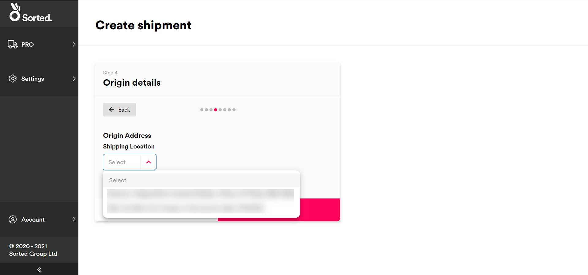
Alternatively, select Enter Address Manually to enter a new address. The Portal displays editable fields relating to address details.
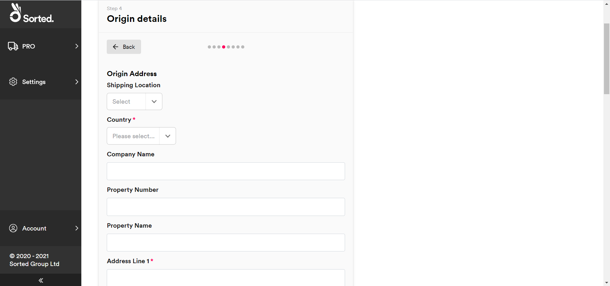
If your organisation (or the relevant tenant / channel) does not have shipping locations set up, then the Portal displays the Enter Address Manually fields automatically.
The origin address has two mandatory properties, Address Line 1 and Country ISO Code. Postal Code is mandatory for certain countries, but not all.
The origin contact has three mandatory properties:
- First Name
- Last Name
In addition, you must provide either a Landline or Mobile contact number for the location. All other fields on the Origin Details card are optional.
Note
For scheduled shipments, the shipping location is usually prepopulated. Scheduled shipments must use a pre-defined shipping location as either their origin or destination address. For more information on configuring shipping locations, see the Managing Shipping Locations page.
Enter the relevant origin address details and click Next to display the Destination Details card.
Step 5 – Enter Destination
The Destination Details card enables you to specify destination address and contact details for the shipment. This step is mandatory for all shipments.
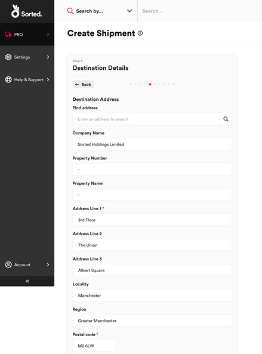
The destination address has two mandatory properties, Address Line 1 and Country ISO Code. Postal Code is mandatory for certain countries, but not all.
The destination contact has three mandatory properties:
- First Name
- Last Name
In addition, you must provide either a Landline or Mobile contact number for the location. All other fields on the Destination Details card are optional.
Once you have entered the relevant destination details, click Next to move on to the optional Shipping Dates card.
Step 6 – Enter Shipping Dates
The Shipping Dates card enables you to specify required shipping and delivery dates. This step is optional for all shipments.
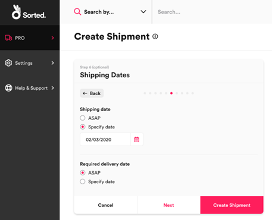
To specify a specific Shipping Date, or Required Delivery Date select the corresponding Specify Date radio button and select the required date from the date picker.
By default, shipping and delivery dates are set to ASAP.
Caution
The Shipping Date and Required Delivery Date properties limit delivery options for the shipment, meaning that it can only be allocated to those carrier services that would be able to ship it within the specified date range and / or deliver it by the specified required delivery date.
If the dates you specify are too restrictive then PRO may be unable to allocate, as there may not be any carrier services available to take the shipment. As such, you should only specify shipping and delivery dates where it is necessary to do so.
Once you have specified shipping dates, either click Create Shipment to finish creating the shipment, or Next to display the optional Customs Documentation card.
Step 7 – Provide Customs Documentation
The Customs Documentation card enables you to specify customs information for international shipments. International shipments require this information in order to ensure successful allocation, customs clearance, and delivery. This step is optional for all shipments.
To add customs documentation for a shipment, first select the Yes radio button from the Customs Documentation Required? field. The Portal displays editable fields relating to customs documentation.
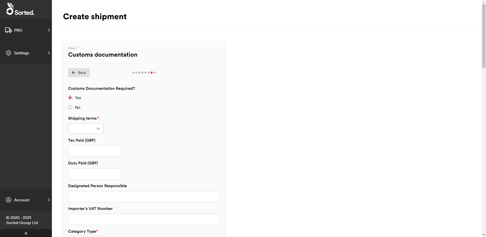
When providing customs documentation, Shipping Terms and Category Type are mandatory. All other properties are optional.
Once you have specified customs information, click Next to display the optional Dangerous Goods card.
Step 8 – Provide Dangerous Goods Information
The Dangerous Goods card enables you to enter dangerous goods information for the shipment. This step is optional for all shipments.
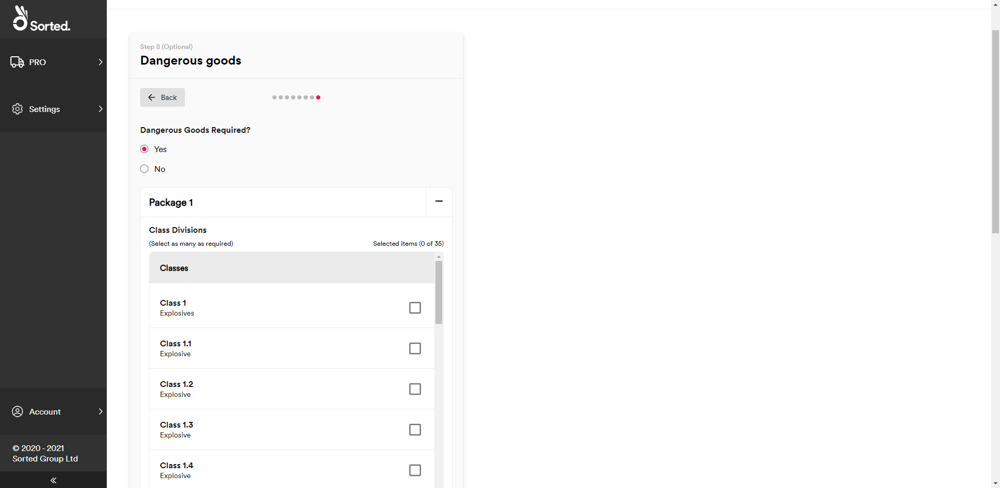
To enter dangerous goods information for a shipment:
- Select Yes on the Dangerous Goods Required? radio button. The Portal displays a list of packages within the shipment, as dangerous goods information is provided at package level.
- Click the + button on the required package to display editable fields relating to dangerous goods details.
- Select an IATA dangerous goods class for the package from the Classes list.
- Use the radio buttons to select a Packing Group for the package.
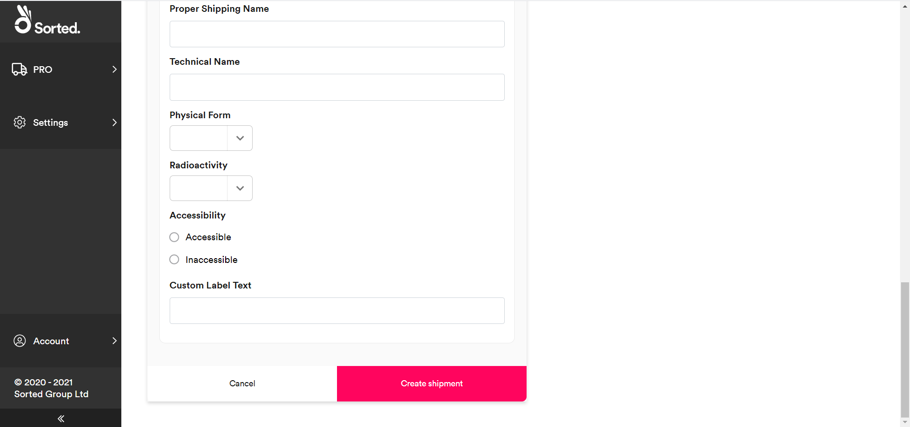
- Enter any ID Number, Proper Shipping Name, and/or Technical Name values for the package as required.
- Select the package's Physical Form from the drop-down list.
- Select the package's level of Radioactivity from the drop-down list.
- Use the radio buttons to specify the package's Accessibility.
- Enter any Custom Label Text, as required.
Note
All dangerous goods fields are optional.
Once you have finished entering dangerous goods information, click Create Shipment to finish the shipment creation process. The system displays a unique system-generated reference for your new shipment.
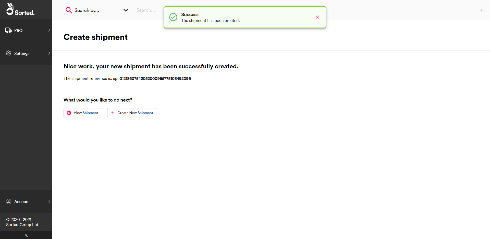